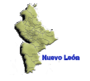

De: La Frikipedia, la enciclopedia extremadamente seria.
De: La Frikipedia, la enciclopedia extremadamente seria. De: La Frikipedia, la enciclopedia extremadamente seria.
| De la serie Países del planeta tierra: | |||||
| Comarca Lagunera | |||||
|---|---|---|---|---|---|
| |||||
| Lema: "Le voy a los Santos, pero como no gana le voy a Rayados (ay sí)" | |||||
| Himno: Amish Paradise
| |||||
| 
Justo a lado estan estos | |||||
| Capital | Gomez PAlacio | ||||
| Mayor ciudad | Torreón | ||||
| Lenguas oficiales | Español Regio (aunque aleguen halar diferente) o y Aleman Menonita | ||||
| Gobierno | Monarquia Democratica | ||||
| Coloso del Norte | Santos Laguna | ||||
| Área | La Laguna | ||||
| Población | muncha gente... (155446876 habitantes) | ||||
| Moneda | El peso que nadie presta | ||||
| Zona horaria | De Hueva | ||||
| Dominio Internet | .dud | ||||
| Código telefónico | 896121
| ||||
| Somos Gente Amable, Progresista, Hospitalaria y personas Leales.......pero recuerde, NO SOMOS REGIOS | |||||
« Por donde empiezo, cada uno tiene una capital diferente, cada uno es una economía diferentes, ninguno de los dos estados depende del otro »
~ Profesor de Geografía Explicando que Coahuila son dos estados diferentes
« Para mí son Regios »
~ Chilango Inculto Que no sabe ni madres
« Mi Diox que ya no me gusta el Furbo desde que el Santos pierde 3 finales en 2 años y entre ellas contra el Monterrey y los Tigres»
~ Lagunero Quejandose de su mierda de equipo de Furbo
Se le llama Comarca Lagunera a la zona metropolitana situada en los estados de Coahuila pertenecientes a la Mesa del Norte (junto Nuevo León y Chihuahua (pero los de Chihuahua no cuentan por que se creen gringos y hablan bien feo)). La gente de estos estados no comprende que Durango y Coauhila ¡SON DOS PUTOS ESTADOS DIFERENTES JODER; QUE LOS VATOS DE PROVINCIA NO ENTIENDEN NADA O QUE???, además de creerse independientes al resto del país, prueba de ello es que tienen su propia liga de Beisbol (la Liga Mayor de la Laguna) y de Furbo Americano (La COEFAL).
Hace unos 500 años un vato llamado Francisco de Ibarra llegó in the name of love y dijó "Hoy Fundaré una Villa con el Nombre de Su Rancho" y de ahí la fundación de Durango, 45 años después se fundaría Saltillo, muchos años Coahuila no existió, la mitad de su territorio se lo dividieron Nuevo León y Nueva Viscaya, ya casi 300 años después salió un nuevo estado llamado Coahuila y Texas y 100 años después varios Franceses y Alemanes fundaron Torreón en Coahuila y Gomez Palacio en Durango y asi se hiso toda la Comarca, ahora estaban divididos varios estados, Nueva Vizcaya se Dividió en 3 lo que era Coahuila, Durango y Chihuahua y Nuevo León cedió una parte suya a Coauhila, bueno en realidad a Nueavo León les quitaron territorio por que se creían Gringos.
Hablar Español Lagunero no es tan difícil como lo parece, como Frikipedia también es una página educativa, tragimnos a una personalidad Lagunera para que nos ayude a aprender a hablar su idioma, asi que demosle la bienvenida al señor Oswaldo Sánchez para aprender ha hablarr Lagunero con el, Oswaldo hablará como todo un Lagunero y la Frikipedia con un Español Mexicano Común:
Frikipedia agradece su tiempo a Oswaldo Sánchez
Su equipo (el Santos Laguna) es conocido por ser el equipo que más negros aporta a la liga y es elunico que tienen en la Primera División Mexicana, los hinchas de este equipo dicen ser los Asesinos Albiverdes...pero son los asesinos albiverdes piratas, solo hay unos asesinos albiverdes originales, y esa es la hinchada durangueña!!!!
Tienen un Chorro de equipos en ligas menores y 1 en la liga mexicana (Vaqueros) y otros en la Liga de la Laguna (Constructores Modelo, y los Sandillero de Tlahualilo Durango), en invierno todos estos equipos organizan su propia liga (la Mayor de la Laguna), unica liga oficialmente gay del norte del país junto a la Liga estatal de Chihuahua (recuerda hermosos chihuahuenses no chihuahueños)
Tenian un equipo en la LNBP (los Algodoneros de la Comarca) pero eran bien malos y siempre fueron opacados por los Leñadores de Durango, hasta que desaparecieron y llegaron los Lobos Grises, en sus años de vida, lo unico que hicieron bien fue traer a Robert Day a México, que posteriormente sería traspasado a los Lobos Grises y volverían a ser opacados por sus vecinos Durangueños
Tienen una su propia Liga Intermedia (COEFAL) para equipos fracasados que no la hicieron en Liga Mayor, actualmente tienen equipos en Liga Mayor (los Lobos UAdeC) y en la Conferencia Premier (la liga de los ricos) a los Borregos Salvajes Laguna, el equipo de JUan Alberto Wong por lo que les guardo respeto.
Por su parte se han visto crecer a luchadores como Black Warrior, el Negro Casas y Blue Panter!!!
En torreón hay una plaza moderna y bonita llamada el Coliseo Centenario, por los 100 años de la Revolución
Autor(es):